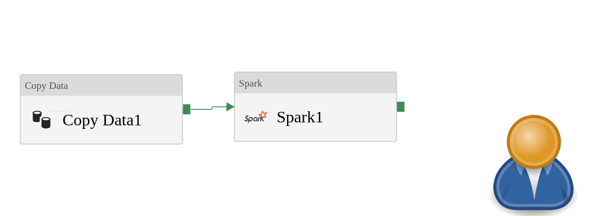
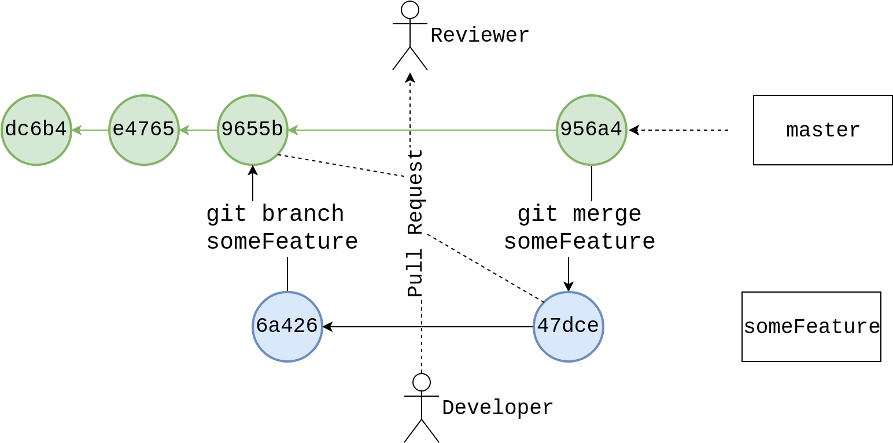

Disposable Development environments
with Azure DevOps and Azure Resource Manager
Gavin Campbell
arapaima.uk
Everything you ever wanted to know about Data Factory
docs.microsoft.com, Introduction to Data Factory
Everything you ever wanted to know about Data Factory
 docs.microsoft.com, Introduction to Data Factory
docs.microsoft.com, Introduction to Data Factory
An Example Scenario
The Portal
Developing ADF pipelines in the Portal
Publish or Publish Not. There is No Save
Unforced Paramaterisation

Enterprise Scale
A tale of two developers


What's missing from this picture?
Source control is what allows us to scale beyond one developer.
git - the essentials
From the horse's mouth
Here is the entire lifecycle for continuous integration & delivery that you can use after you enable Azure Repos Git integration in the Data Factory UI:- Set up a development data factory with Azure Repos in which all developers can author Data Factory resources like pipelines, datasets, and so forth.
- Then developers can modify resources such as pipelines. As they make their modifications, they can select Debug to see how the pipeline runs with the most recent changes.
- After developers are satisfied with their changes, they can create a pull request from their branch to the master branch (or the collaboration branch) to get their changes reviewed by peers.
- After changes are in the master branch, they can publish to the development factory by selecting Publish.
- When the team is ready to promote changes to the test factory and the production factory, they can export the Resource Manager template from the master branch, or from any other branch in case their master branch backs the live development Data Factory.
- The exported Resource Manager template can be deployed with different parameter files to the test factory and the production factory.
docs.microsoft.com, Continuous integration and delivery (CI/CD) in Azure Data Factory

Behind the scenes...
Developing abstractions intended to simplify the use of git source control rarely ends well.
WHere do we go from here?
ARM Templates
ARM Templates
Template deploymentWith Resource Manager, you can create a template (in JSON format) that defines the infrastructure and configuration of your Azure solution. By using a template, you can repeatedly deploy your solution throughout its lifecycle and have confidence your resources are deployed in a consistent state.docs.microsoft.com, Resource Manager
ARM Templates

All our resources are defined in the same place
{
"name": "[parameters('adlsAccountName')]",
"type": "Microsoft.DataLakeStore/accounts",
"apiVersion": "2016-11-01",
"location": "[resourceGroup().location]",
"scale": null,
"properties": {},
"dependsOn": [],
"resources":[
{
"type": "Microsoft.DataLakeStore/accounts/providers/roleAssignments",
"apiVersion": "2017-05-01",
"name": "[concat(parameters('adlsAccountName'), '/Microsoft.Authorization/', guid(resourceId('Microsoft.DataLakeStore/accounts', parameters('adlsAccountName'))))]",
"dependsOn": [
"[resourceId('Microsoft.DataLakeStore/accounts', parameters('adlsAccountName'))]"
],
"properties": {
"roleDefinitionId": "[variables('readerRoleDefinition')]",
"principalId": "[reference(concat('Microsoft.DataFactory/factories/', parameters('dataFactoryName')), '2018-06-01', 'Full').identity.principalId]"
"parameters": {
"storageAccountName": {
"type": "string",
"defaultValue": "[concat('kebabstor', uniqueString(resourceGroup().id))]"
},
"adlsAccountName": {
"type": "string",
"defaultValue": "[concat('kebabadls', uniqueString(resourceGroup().id))]"
},
"adfApplicationId":{
"type": "string"
},
"adfApplicationKey":{
"type": "securestring"
},
"dwServerName": {
"type": "string",
"defaultValue": "[concat('kebabDwServer', uniqueString(resourceGroup().id))]"
},
"dwTierName":{
"type": "string",
"defaultValue": "DW100c"
}
}